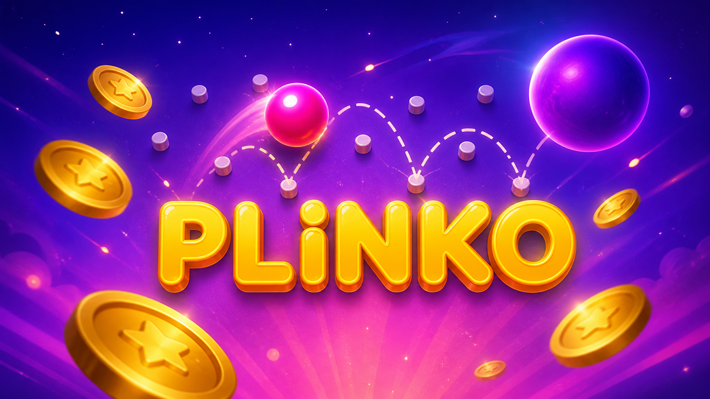
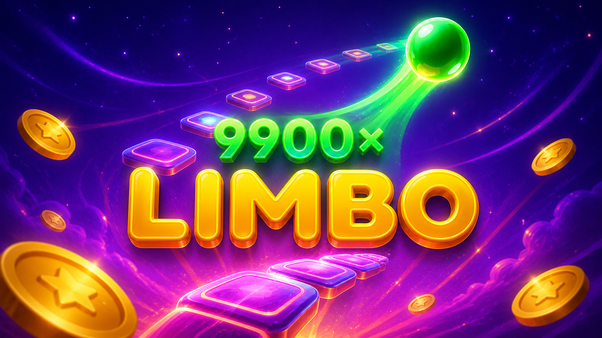
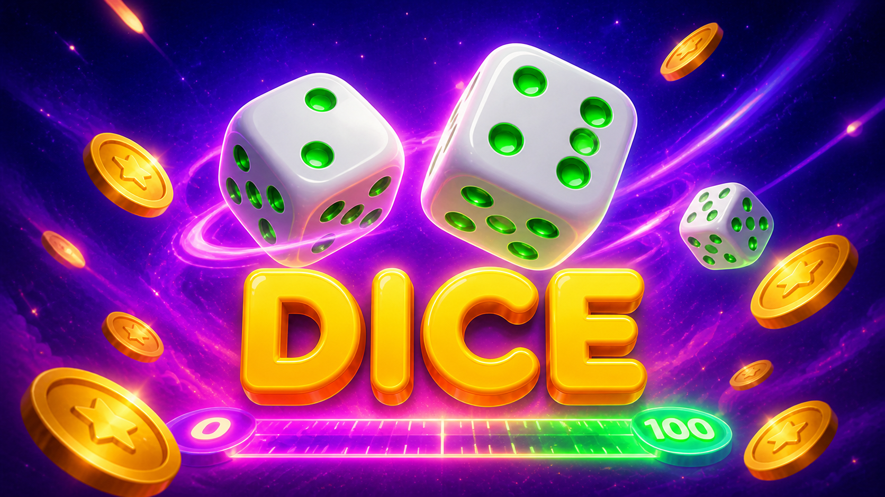

Simulador educativo de Blackjack
Armá una mano más cercana a 21 que la del crupier sin pasarte. El juego usa solamente fichas virtuales gratis.
← Volver al inicioCrupier0
0Tu mano
Otros juegos
Probá los otros simuladores educativos disponibles.

Disponible
Plinko: física de rebotes aleatorios
Soltá bolas y observá la distribución de resultados aleatorios.
Jugar →
Disponible
Limbo: multiplicador y probabilidad
Elegí un objetivo y explorá cómo cambia la probabilidad del resultado.
Jugar →
Disponible
Dice: escala de 0 a 100
Elegí una condición y observá el resultado en la escala numérica.
Jugar →Cómo funciona Blackjack
Las cartas numéricas valen su número; jota, reina y rey valen 10; el as vale 11 o 1 si 11 hace pasar de 21. Después de tu decisión, el crupier revela su carta oculta y pide hasta 17.
Las fichas son gratis, no se venden ni se retiran y no tienen valor monetario real. El simulador no acepta apuestas reales ni entrega premios.